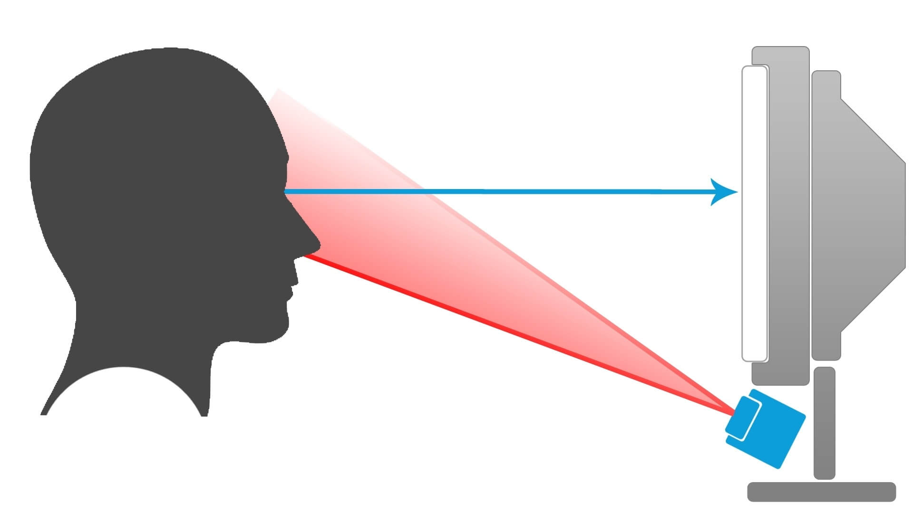
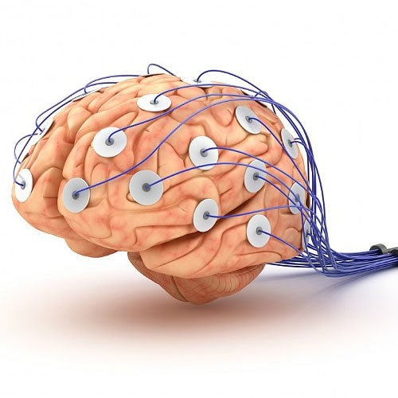
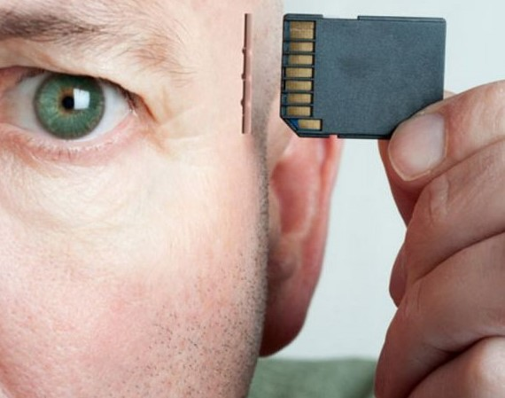

Зрительное, или визуальное, восприятие можно определить как способность истолковывать информацию,
достигающую глаз через свет видимой области спектра. Результатом интерпретации, которую выполняет
наш мозг на основе этой информации, является то, что известно как зрительное восприятие, или зрение.
Для сбора данных об особенностях зрительного восприятия используется метод окулографии (eye-tracking). Этот метод позволяет
с помощью специального датчика выявить особые области повышенного интереса к исследуемому объекту, которым может быть фото-
или видеоматериал. Метод позволяет отслеживать то, как взгляд испытуемого перемещался по объекту, а также выявлять места остановок.
Данные, полученные с помощью метода окулографии, являются уникальным и точным отражением того, как человек изучал объект, что
привлекало внимание в большей или меньшей степени, что интересовало человека во время осмотра.
Этим методом можно выявить места для размещения скрытой рекламы.
Внимание — избирательная направленность восприятия на тот или иной объект.
Изменение внимания выражается в изменении степени ясности и отчетливости
восприятия объекта, и в некоторых случаях внимание можно рассматривать как
отношение человека к объекту. За вниманием стоят интересы, потребности,
установки и другие психологические характеристики личности. Внимание
обусловливает успешную ориентировку субъекта в окружающем мире и достижение
тех результатов, которые человек ставит перед собой. Когда объект находится
в поле внимания, все остальное воспринимается неотчетливо и чаще всего не осознается.
Различный уровень внимания указывает на готовность к восприятию информации. Выявление низкого
уровня концентрации внимания указывает на то, что человек готов переключить свое внимание на объекты,
которые являются более привлекательными. Высокий уровень внимания наоборот –– указывает на то, что другие объекты теряют свою значимость в данный момент. Таким образом, при условии воздействия на человека нескольких раздражителей внимание будет направлено на тот объект, который будет являться сильнейшим раздражителем, что очень важно знать при создании рекламы.
Согласно психофизиологическим исследованиям, посвященным проблеме потребностей человека,
в большинстве случаев потребности остаются неосознаваемыми до определенного момента, пока внимание не
«наткнется» на объект с необходимыми свойствами, способными удовлетворить потребность. Метод окулографии
является единственным достоверным методом сбора данных о движении глаз и распределении внимания покупателя.
Поэтому метод является эффективным инструментом для оценки степени воздействия информации на человека во
время просмотра рекламы, что помогает определить необходимые средства воздействия, такие как шрифт, текст,
изображение, оптимальное расположение информации на плоскости.

Эмоциональный отклик и методы его исследования
Эмоция — психофизиологический процесс, который оказывает прямое влияние на мотивацию и регулирует поведение человека.
Оценка уровня эмоционального отклика используется в нейромаркетинге как метрика оценки побудительного свойства объекта или ситуации.
Согласно американскому ученому К. Э. Изарду, эмоция — это нечто, что переживается как чувство, которое мотивирует, организует
и направляет восприятие, мышление и действие. По его мнению, ключевым аспектом проявления эмоции является появляющаяся в процессе
переживания мотивация. Другими словами, человек делает то, что дарит ему положительные эмоции, и избегает того, что его пугает.
Эмоциональные процессы имеют как психологические, так и физиологические составляющие, выявляемые различными методами, одним из
которых является ЭЭГ (электроэнцефалография).
Электроэнцефалограмма (результат ЭЭГ) представляет собой график электрической активности головного мозга, образующийся посредством
наложения электродов на кожу головы и отражающий функциональное состояние мозга. Данные, получаемые этим методом, соотносятся
с изменением состояния человека (уровня внимания, бодрствования, эмоционального состояния). Этот метод обладает высоким временным
разрешением и позволяет регистрировать быстрые изменения, что соответствует высокой скорости обработки информации мозгом.

Память — это общее обозначение для комплекса познавательных способностей и высших психических функций по
накоплению, сохранению и воспроизведению знаний и навыков. Процесс запоминания подразумевает наличие
специфических свойств у объекта, которые способствуют удержанию его образа в памяти длительное время.
Память как психический процесс имеет функции, без которых человек не смог бы адаптироваться к миру. Например, механизм памяти
и воспоминания можно рассмотреть как обращение человека к поисковой системе. При появлении потребностей в чем-либо сознание
обращается к памяти для того, что бы найти ответ на необходимый вопрос и удовлетворить некоторое желание. В результате обращения
к памяти человек получает некоторый последовательный список воспоминаний, которые могут отвечать на запрос об удовлетворении потребностей.
Сам процесс выбора пути удовлетворения потребностей из воспоминаний имеет свои критерии, например наличие необходимых ресурсов
(материальные временные и т. д.). С учетом существующих условий человек принимает решение об использовании того или иного пути
удовлетворения потребности. Таким образом, сформированный образ в памяти человека будет появляться первым, а при условии
доступности и лояльности очевиден выбор в пользу покупки продукта или услуги.
Формирование в памяти положительных образов товаров и услуг –– это важный инструмент маркетинга, который позволяет, при наличии
определенных потребностей, склонять пользователя к необходимому решению, что особенно актуально в условиях высокого темпа жизни
и дефицита времени.